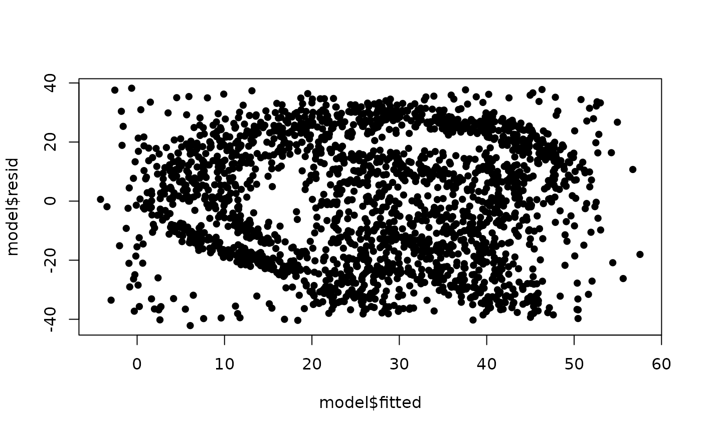

This function adds predictors of pure noise to a dataset made by
surreal(). The hidden image then shows only in the residuals of the
model with the real predictors: leave some out and it is not there yet,
and let decoys in and it blurs. Finding it becomes a variable selection
problem, which surreal_path() works through step by step.
Arguments
- data
A data frame from
surreal(),surreal_text()orsurreal_image(), with a response namedy.- n
Integer. Number of decoy predictors to add. Default is 30.
- sd
Numeric or
NULL. Standard deviation of the decoys. IfNULL(default), the average standard deviation of the predictors indata.- shuffle
Logical. If
TRUE(default), the decoys are mixed in among the real predictors and every predictor is renamedX.1,X.2, ..., so that neither position nor name gives a decoy away. IfFALSE, the decoys are added after the real predictors asD.1,D.2, ....
Value
The data frame with n more columns. The names of the decoys are kept in
its "decoys" attribute, which is the answer key. The attribute is not
written out by write.csv().
See also
surreal_path() to select the predictors one step at a time.
Examples
set.seed(114)
hidden <- surreal(r_logo_image_data)
# Mix in 30 decoys
decoyed <- surreal_decoys(hidden)
names(decoyed)
#> [1] "y" "X.1" "X.2" "X.3" "X.4" "X.5" "X.6" "X.7" "X.8" "X.9"
#> [11] "X.10" "X.11" "X.12" "X.13" "X.14" "X.15" "X.16" "X.17" "X.18" "X.19"
#> [21] "X.20" "X.21" "X.22" "X.23" "X.24" "X.25" "X.26" "X.27" "X.28" "X.29"
#> [31] "X.30" "X.31" "X.32" "X.33" "X.34" "X.35"
# The answer key
attr(decoyed, "decoys")
#> [1] "X.1" "X.4" "X.5" "X.6" "X.7" "X.9" "X.10" "X.11" "X.12" "X.13"
#> [11] "X.14" "X.15" "X.17" "X.18" "X.19" "X.20" "X.21" "X.22" "X.23" "X.24"
#> [21] "X.26" "X.27" "X.28" "X.29" "X.30" "X.31" "X.32" "X.33" "X.34" "X.35"
# The model with every predictor no longer shows a clean image
model <- lm(y ~ ., data = decoyed)
plot(model$fitted, model$resid, pch = 16)
